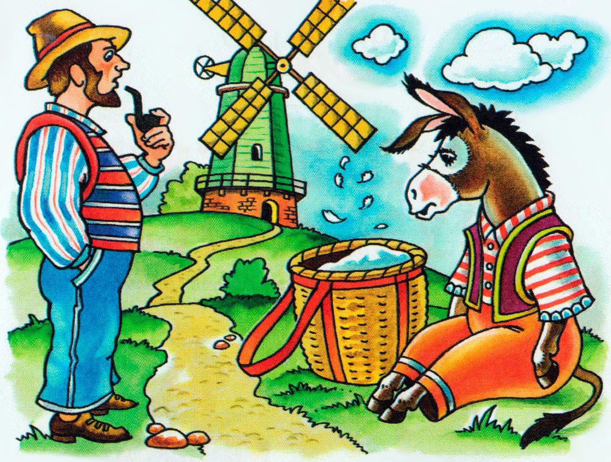
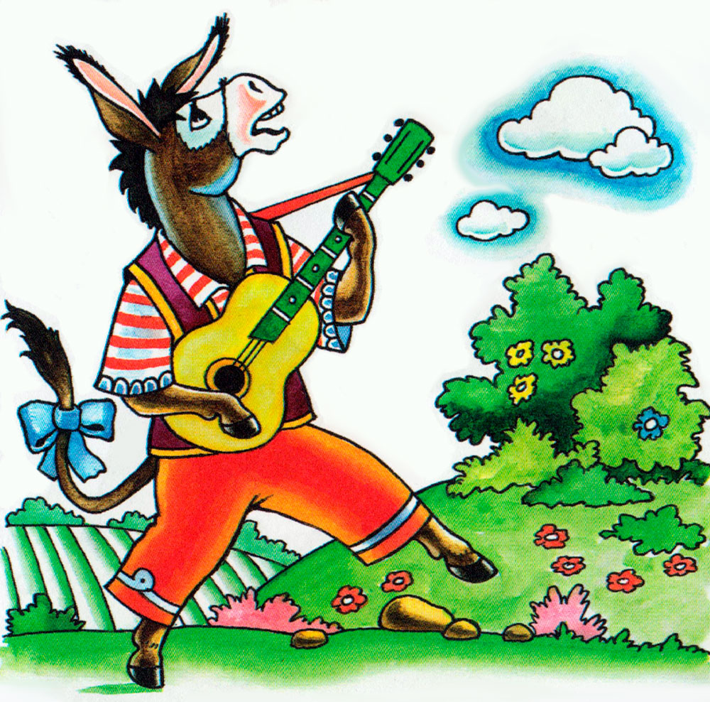
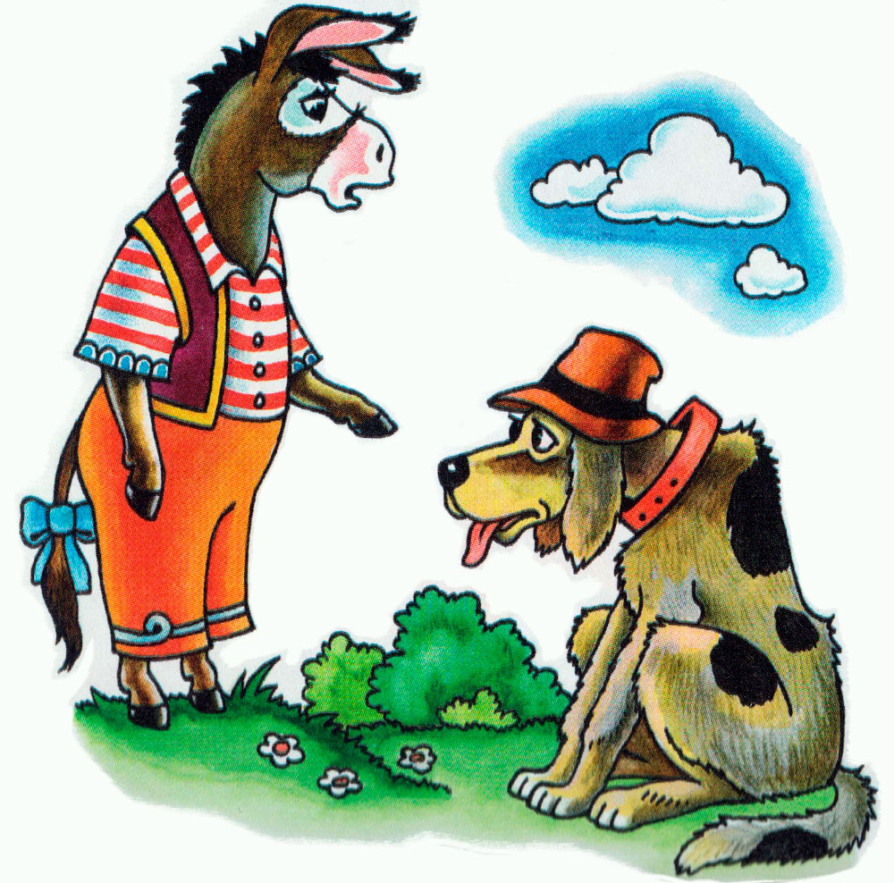
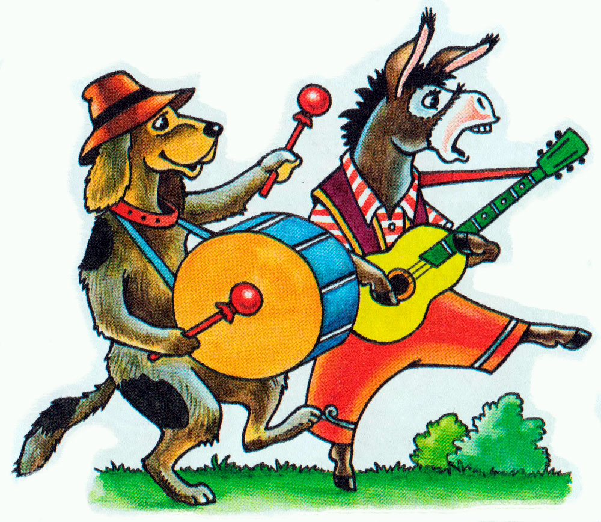
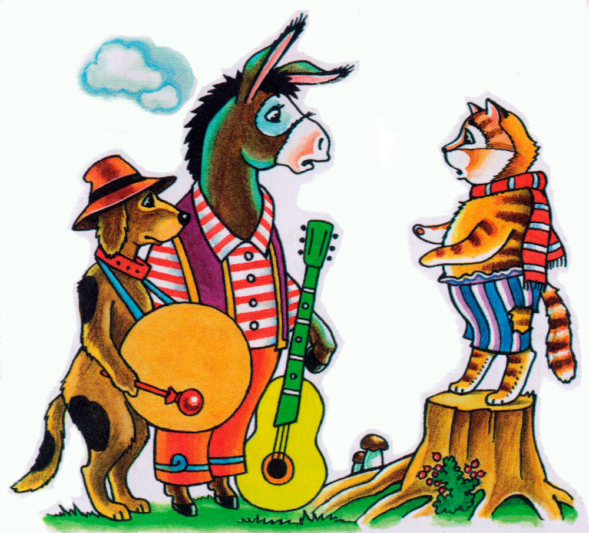
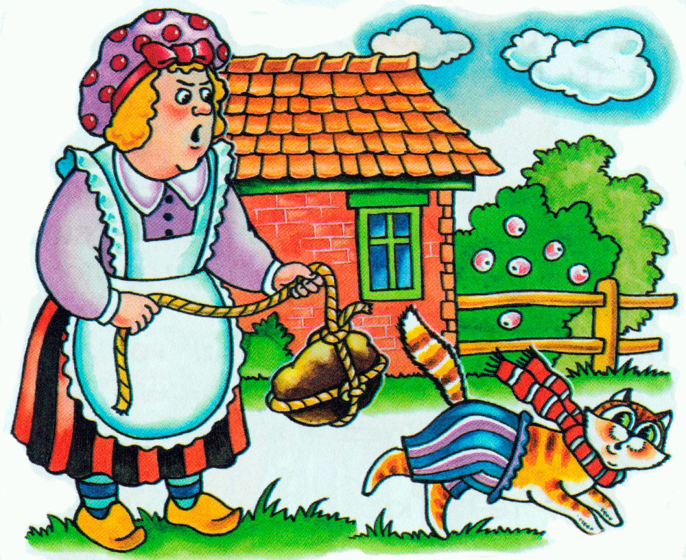
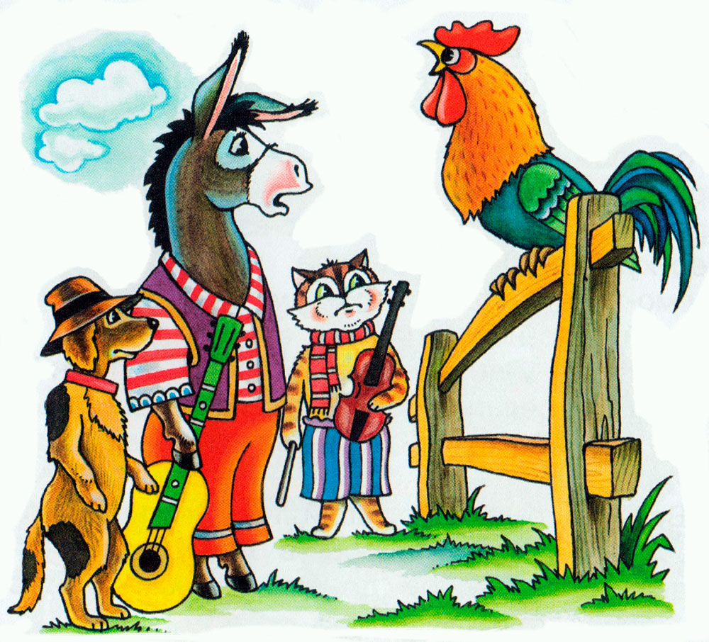

У одного человека был осел, который много лет покорно возил на мельницу мешки с мукой, но к старости осел ослаб и стал негоден для работы.

Тогда хозяин задумал уморить его голодом, но осел догадался к чему идет дело, убежал и направился в город Бремен.
Он решил наняться там в музыканты.

Пройдя немного, осел увидел охотничью собаку. Она лежала на дороге и дышала так тяжело, как будто набегалась до изнеможения.
- Чего ты так пыхтишь, Полкан? - спросил осел.
- Ах, - отвечала собака, - я стара и с каждым днем становлюсь всё слабее и уже не гожусь для охоты, поэтому мой хозяин хотел убить меня. Я убежала куда глаза глядят! А чем же я буду теперь зарабатывать себе на хлеб?

- Знаешь что, - сказал осел, - я иду в Бремен и наймусь там в музыканты. Иди со мной и тоже займись музыкой. Я буду играть на лютне, а ты станешь бить в барабан. Собака согласилась и они пошли дальше.

Вскоре они увидели на дороге кошку. Она сидела на дороге такая скучная, как три дня дождливой погоды.
- Что с тобой приключилось, старая усомойка, - спросил осел.

- Кто же станет радоваться, если его схватят за глотку? Мои зубы иступились и теперь я охотнее сижу за печкой и мурлычу, чем гоняюсь за мышами, поэтому моя хозяйка задумала утопить меня.

Конечно, я убежала, но кто мне теперь посоветует куда идти?
- Идем с нами в Бремен, ты знаешь толк в музыке и сможешь наняться там в музыканты. Кошке это понравилось, и они пошли вместе.
Потом наши беглецы проходили мимо какого-то двора. На воротах сидел петух и орал изо всех сил.

- Чего ты так дерешь глотку? - спросил осел.- Что с тобой?
- Это я предсказываю на завтра хорошую погоду, - ответил петух, - ведь завтра праздник, но так как по этому случаю к нам приедут гости, моя хозяйка без всякого милосердия велела кухарке сварить из меня суп. Мне сегодня вечером должны отрубить голову. Вот я и кричу во всё горло, пока еще могу.
- Ну что ты, красноголовый, - сказал осел, - идем лучше с нами. Мы направляемся в Бремен. Что-нибудь получше смерти ты всюду найдешь. У тебя хороший голос и если мы запоем хором – получится великолепно. Петуху понравилось это предложение и они отправились дальше вчетвером.(br)
Но они не могли в один день добраться до Бремена и к вечеру пришли в лес, где решили переночевать. Осел и собака уселись под большим деревом,
кошка устроилась на ветвях, а петух взлетел на самую верхушку дерева, где ему казалось всего безопасней. Прежде чем заснуть, петух поглядел на все четыре стороны и вдруг
ему показалось, что он видит вдали огонек. Он крикнул своим товарищам, что близко должен быть дом, потому что виден свет.
- Тогда мы должны отправиться туда, этот ночлег мне не нравится, - сказал осел. И собака заметила, что несколько косточек с остатками мяса очень
пригодились бы ей. Итак, они отправились в ту сторону, где мерцал огонек. Свет становился всё сильнее и сильнее, и, наконец, они пришли к ярко освещённому дому разбойников.
Осёл как самый высокий приблизился к окну и заглянул внутрь.